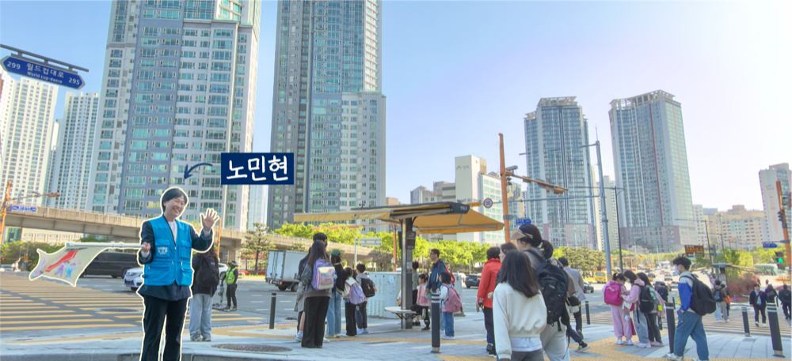
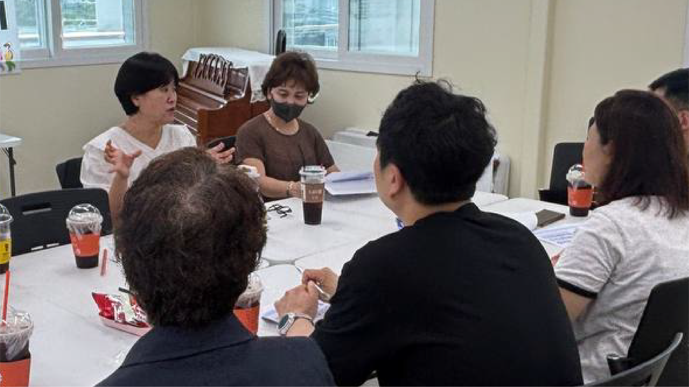
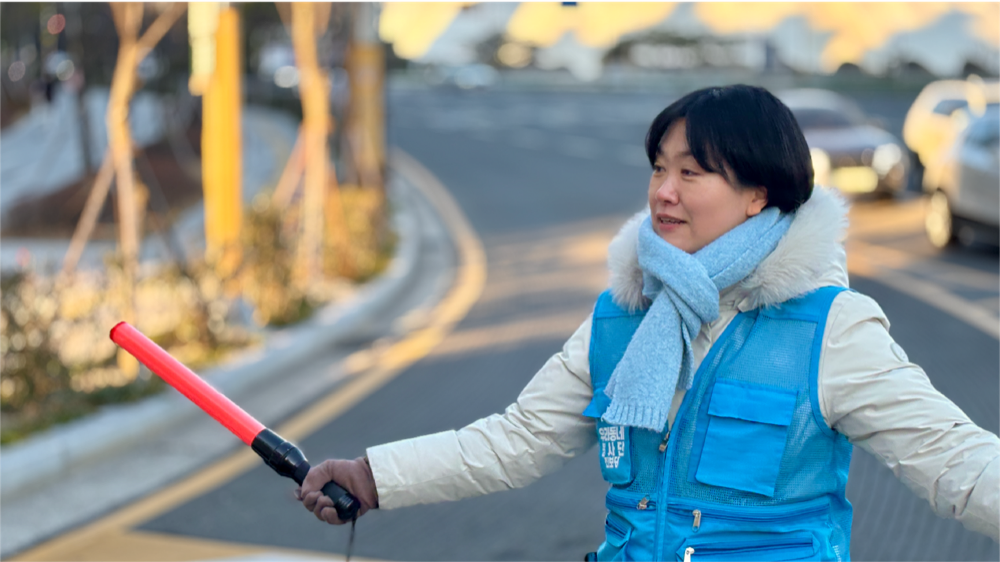
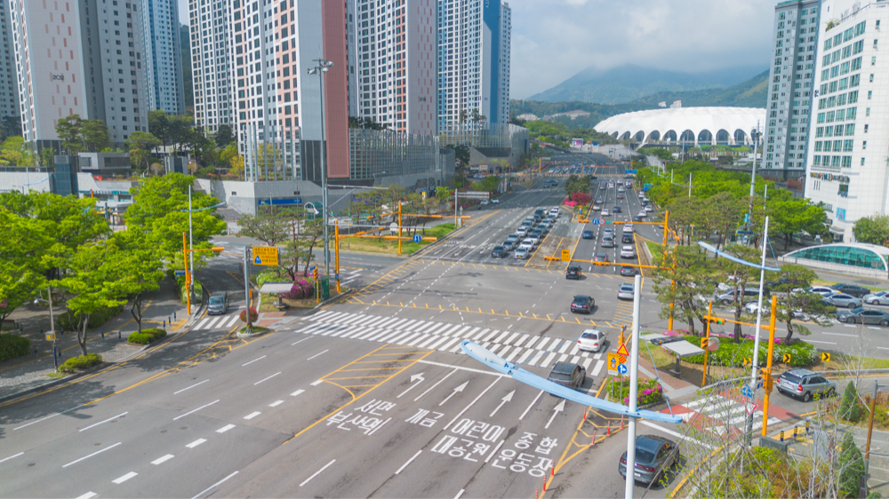
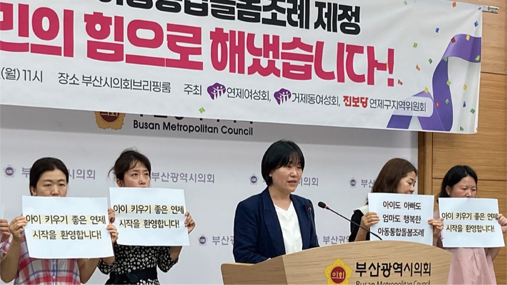
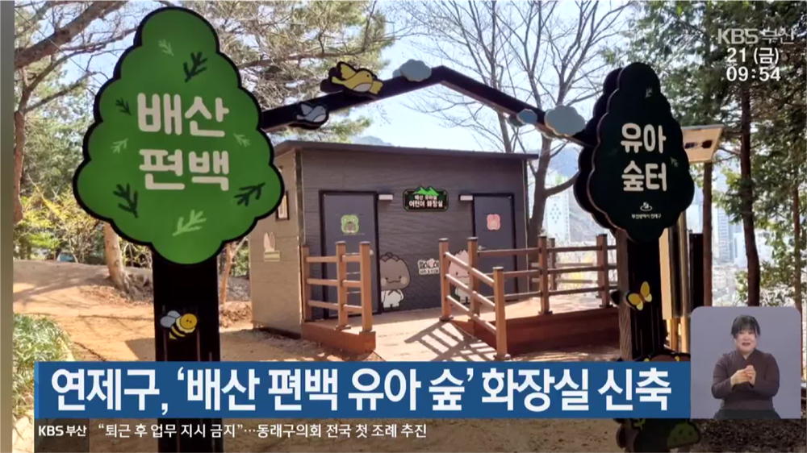
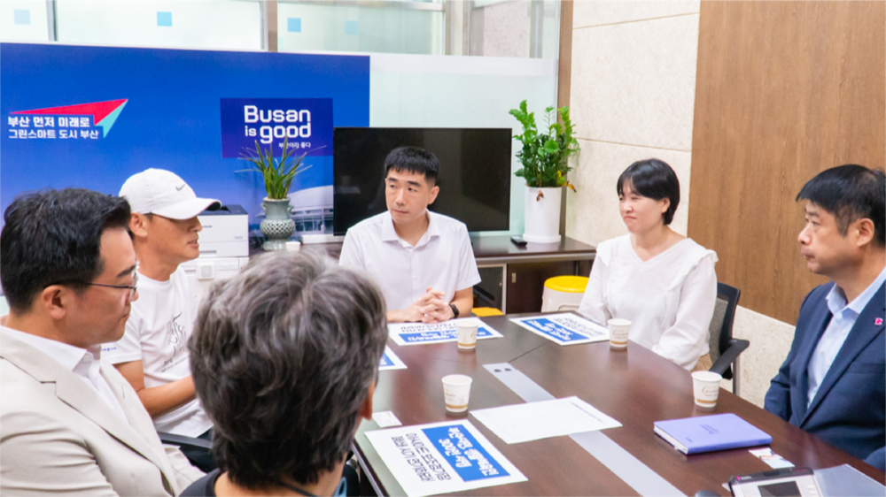
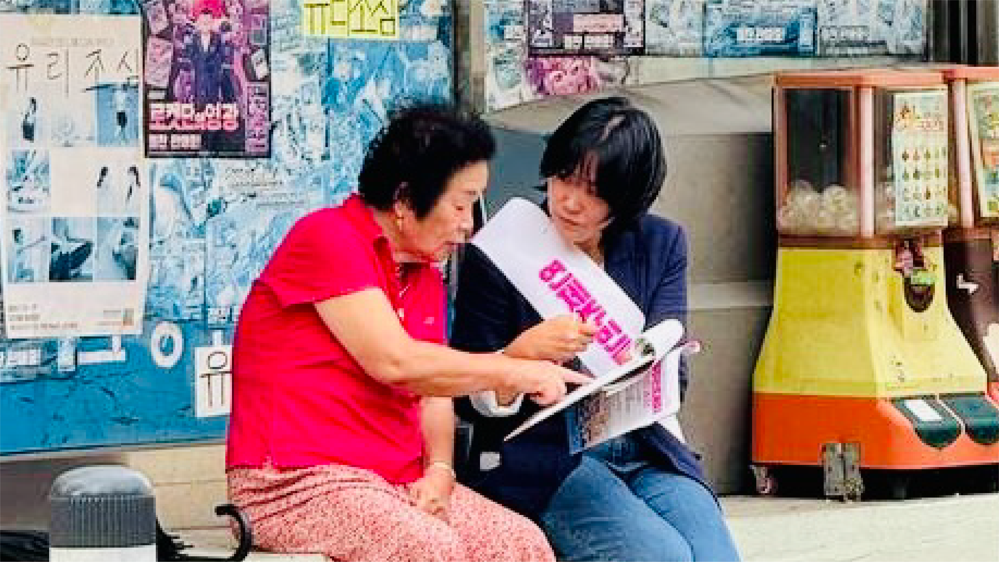
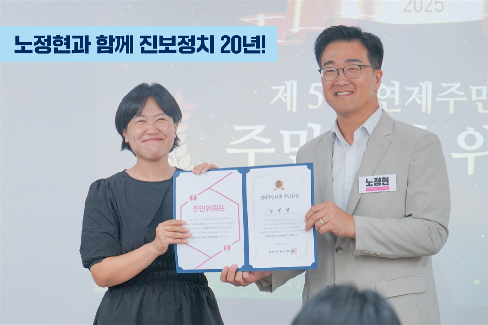
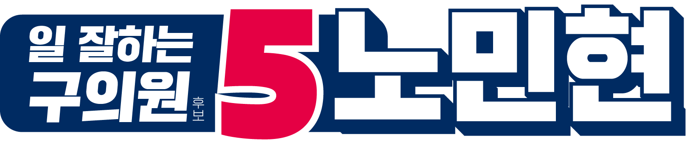

거제동 구의원 후보
예금주 : 노민현후원회(연제구의원선거)
10만원까지는 연말정산 시 전액 돌려받습니다.

학교를 가기 위해 꼭 건너가야 하는 길.
24년에 레이카운티로 이사와 이제 갓 입학한 둘째와 같은 1학년 친구들을 생각하며 교통봉사를 시작했습니다.
2년동안 출근 전 틈틈이 했던 교통봉사가 400회차를 넘겼습니다.
단 한 건의 교통사고도 없이 아이들이 무사히 학교를 갔다는 것만으로도 큰 기쁨입니다.
“얘들아. 오늘도 학교 잘 다녀와~”



아이들 통학로인 거성교차로, 우회전 차선에 신호등이 없어 사고의 위험성이 크다는 민원을 받았습니다. 서명운동, 주민간담회, 경찰청 교통과와의 논의 끝에, 올해 2월 신호등이 설치 되었습니다.

주민들의 힘을 모아 연제구 아동통합돌봄조례를 제정하는데 앞장 섰습니다.

숲터에는 임시방편 만든 간이텐트 화장실이 있었습니다 건립 촉구 서명운동, 구청 간담회 등을 진행해 화장실이 만들어졌습니다.

부산시가 전국체육대회 준비를 이유로 장기간 폐쇄 통보했습니다. 집단진정으로 개방시기를 연장하고 공사기간을 조정했습니다.

소상공인 부담경감 크레딧, 경영안정 바우처 신청 등 상가를 전수 방문하며 정책의 혜택을 받을 수 있도록 발로 뛰었습니다.
● 통학로 100% 안심보장
● 연제 맞춤 진로·진학 센터
● 10대들의 스마트폰 중독 완화 '도서관 문해력 혁신'
● 연제형 문화 누림 '맞춤형 문화 큐레이션'
● 부모-자녀 마음을 잇는 '마음이음 119'
● 화지산 숲놀이터 조성
● 어린이 의회체험 정규프로그램으로 편성
● 오래된 아파트 놀이터 민관협력 리모델링

공천만 받으면 당선되는 구의원은
주민 눈치를 보지 않습니다.
구의원 해외연수부터 중단하고
4년 내내 주민을 향해 발로 뛰겠습니다.

예금주 : 노민현후원회(연제구의원선거)
10만원까지는 연말정산 시 전액 돌려받습니다.